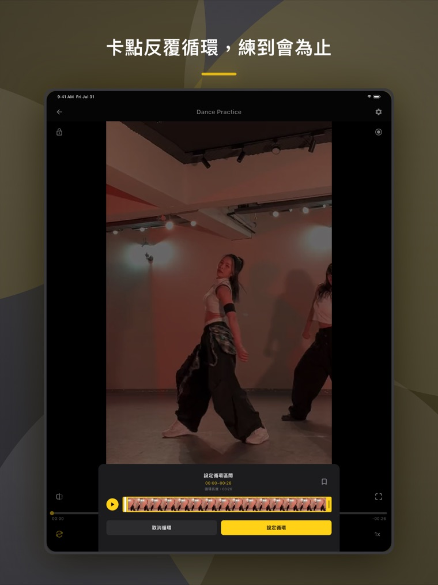
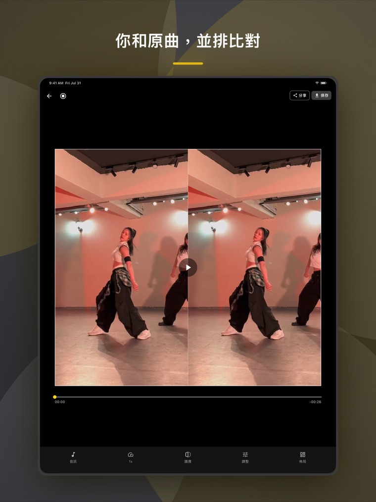
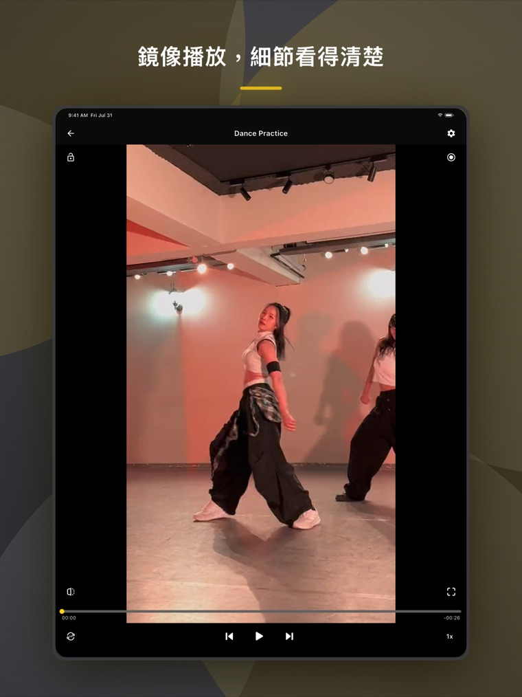
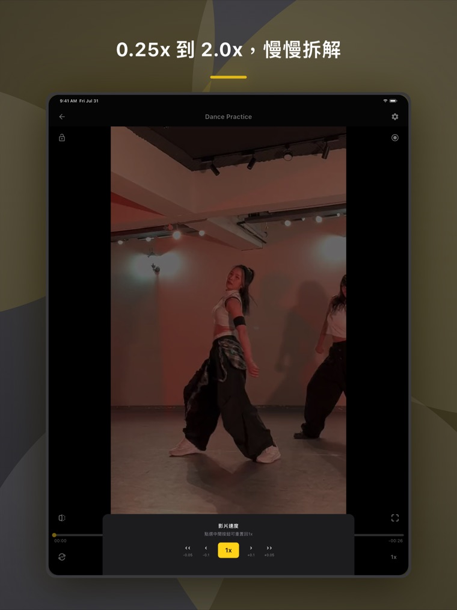

匯入影片
從相簿或「檔案」選練習室版、教學影片都可以。
DANCE PRACTICE, MADE CLEAR
SyncMirror 是專為跟影片學舞設計的練舞 App。鏡像對方向、慢速拆細節、AB 循環練卡點；錄下自己後，與原影片並排比對。


使用方式
不用註冊、不用設定，打開就能練。
從相簿或「檔案」選練習室版、教學影片都可以。
畫面左右翻轉跟著跳不會反，放慢到 0.25 倍，只循環一直跳錯的那段。
跟著音樂錄下自己，錄完直接和原影片並排看。
APP 實際畫面
每個功能都接著你的練習流程：先學會，再錄下來檢查。


畫面取自 SyncMirror 繁體中文 iPad 版；手機介面會依螢幕尺寸調整。
功能介紹
從「差不多」練到「整齊」需要的工具都在這裡。
0.25x～2.0x。細節慢慢拆，熟了再加快練體力。
設好起點和終點，那一段無限重播，不用一直拉時間軸。
錄影時同步播放原曲，錄出來就是對著拍子的。
你的錄影和原影片一起播，可以微調時間差，一格一格對齊。
畫面左右翻轉，像在舞蹈教室對著鏡子跳。
影片縮成小視窗，一邊看歌詞或用其他 App 一邊練。
適用對象
為舞者設計，任何需要看示範、反覆模仿的練習都能用。
用戶評價
「尤其是 A B 循環，對練舞的人來說除了慢速之外這點超重要的。自從我下載了這個 App 之後，我把其他的都刪掉了。」App Store 評論（台灣）· 2026 年 2 月
「真心感謝有這個 app，真的幫助了我自己練習，尤其是錄影比對功能真的神好用。」App Store 評論（台灣）· 2026 年 6 月
「剛學舞動作都跟不上……這個 App 可以轉鏡面跟調慢，然後就慢慢跟得上了。」App Store 評論（台灣）· 2026 年 1 月
從相簿或「檔案」匯入。面對示範者時，如果左右方向容易搞混，點一下鏡像，讓你看到的方向與自己的動作一致。
將速度降到 0.25×～0.75×，設定 AB 循環的起點和終點。先看腳步，再看手位與轉身；熟悉後逐步加回原速。
播放原曲同時錄下自己。錄完並排播放兩支影片，微調時間差，檢查拍點、角度和站位，再回到最需要練的段落。
常見問題